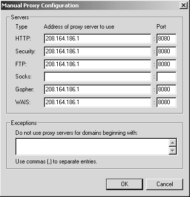

| Securing and Optimizing Linux: RedHat Edition -A Hands on Guide | ||
|---|---|---|
| Prev | Chapter 28. Software -Server/Proxy Network | Next |
If you decide to use Squid as proxy-caching server, and allow all users in your corporate network to use Squid to access the Internet only in this mode, you must instruct your users browsers to fetch objects from your Squid proxy server instead of retrieving them directly from the Internet.
With Netscape Communicator, follow these simple steps below:
Open Netscape Communicator
Go to menu
Click on
Double click category on the left side
Click on subcategory option
Select on the right side radio button
Click on the button
Fill the boxes with your proxy server information
For example:
| HTTP: 208.164.186.1 Port: 8080 |
| Security: 208.164.186.1 Port: 8080 |
| FTP: 208.164.186.1 Port: 8080 |
| Gopher: 208.164.186.1 Port: 8080 |
| WAIS: 208.164.186.1 Port: 8080 |
